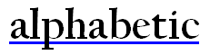

1. Introduction
This subsection is non-normative.
This module covers text decoration, i.e. decorating the glyphs of the text once typeset according to font and typographic rules. (See [CSS3TEXT] and [CSS3-FONTS].) Such features are traditionally used not only for purely decorative purposes, but also in some cases to show emphasis, for honorifics, and to indicate editorial changes such as insertions, deletions, and misspellings.
CSS Levels 1 and 2 only defined very basic line decorations (underlines, overlines, and strike-throughs) appropriate to Western typographical traditions. Level 3 of this module adds the ability to change the color, style, position, and continuity of these decorations, and also introduces emphasis marks (traditionally used in East Asian typography), and shadows (which were proposed then deferred from Level 2).
1.1. Module Interactions
This module replaces and extends the text-decorating features defined in [CSS21] chapter 16.
1.2. Values
This specification follows the CSS property definition conventions from [CSS21]. Value types not defined in this specification are defined in CSS Level 2 Revision 1 [CSS21]. Other CSS modules may expand the definitions of these value types: for example [CSS3COLOR], when combined with this module, expands the definition of the <color> value type as used in this specification.
In addition to the property-specific values listed in their definitions, all properties defined in this specification also accept the inherit keyword as their property value. For readability it has not been repeated explicitly.
1.3. Terminology
The terms character, letter, and content language as used in this specification are defined in [CSS3TEXT]. Other terminology and concepts used in this specification are defined in [CSS21] and [CSS3-WRITING-MODES].
2. Line Decoration: Underline, Overline, and Strike-Through
The following properties describe line decorations that are added to the content of an element. When specified on or propagated to an inline box, that box becomes a decorating box for that decoration, applying the decoration to all its fragments. The decoration is then further propagated to any in-flow block-level boxes that split the inline (see CSS2.1 section 9.2.1.1). When specified on or propagated to a block container that establishes an inline formatting context, the decorations are propagated to an anonymous inline box that wraps all the in-flow inline-level children of the block container. When specified on or propagated to a ruby box, the decorations are propagated only to the ruby base. For all other box types, the decorations are propagated to all in-flow children.
Note that text decorations are not propagated to any out-of-flow descendants, nor to the contents of atomic inline-level descendants such as inline blocks and inline tables. They are also not propagated to inline children of inline boxes, although the decoration is applied to such boxes.
By default underlines, overlines, and line-throughs are applied only to non-replaced inline boxes, and are drawn across all text (including white space, letter spacing, and word spacing). Atomic inlines, such as images, are not decorated. The text-decoration-skip property can be used to modify this behavior, for example allowing atomic inlines to be underlined or requiring that white space be skipped. Margins, borders, and padding of the decorating box are always skipped.
Relatively positioning a descendant moves all text decorations applied to it along with the descendant’s text; it does not affect calculation of the decoration’s initial position on that line. The visibility property, text-shadow, filters, and other graphical transformations likewise affect text decorations as part of the text they’re drawn on, even if the decorations were specified on an ancestor box, and do not affect the calculation of their initial positions or thicknesses. (In the case of line decorations drawn over an atomic inline or across the margins/borders/padding of a non-replaced inline box, they are analogously associated with the affected atomic inline / non-replaced inline box rather than with the decorating box.)
In the following style sheet and document fragment:
blockquote { text-decoration: underline; color: blue; }
em { display: block; }
cite { color: fuchsia; }
<blockquote>
<p>
<span>
Help, help!
<em> I am under a hat! </em>
<cite> —GwieF </cite>
</span>
</p>
</blockquote>
...the underlining for the blockquote element is propagated to an
anonymous inline box that surrounds the span element, causing
the text "Help, help!" to be blue, with the blue underlining from
the anonymous inline underneath it, the color being taken from the
blockquote element. The <em>text</em> in the em block is also underlined, as it is in an in-flow block to
which the underline is propagated. The final line of text is fuchsia,
but the underline underneath it is still the blue underline from the
anonymous inline element.
This diagram shows the boxes involved in the example above. The rounded aqua line represents the anonymous inline element wrapping the inline contents of the paragraph element, the rounded blue line represents the span element, and the orange lines represent the blocks.
2.1. Text Decoration Lines: the text-decoration-line property
| Name: | text-decoration-line |
|---|---|
| Value: | none | [ underline || overline || line-through || blink ] |
| Initial: | none |
| Applies to: | all elements |
| Inherited: | no (but see prose) |
| Percentages: | N/A |
| Media: | visual |
| Computed value: | as specified |
| Animatable: | no |
Specifies what line decorations, if any, are added to the element. Values have the following meanings:
- none
- Neither produces nor inhibits text decoration.
- underline
- Each line of text is underlined.
- overline
- Each line of text has a line over it (i.e. on the opposite side from an underline).
- line-through
- Each line of text has a line through the middle.
- blink
- The text blinks (alternates between visible and invisible). Conforming user agents may simply not blink the text. Note that not blinking the text is one technique to satisfy checkpoint 3.3 of WAI-UAAG. This value is deprecated in favor of Animations [CSS3-ANIMATIONS].
2.2. Text Decoration Color: the text-decoration-color property
| Name: | text-decoration-color |
|---|---|
| Value: | <color> |
| Initial: | currentColor |
| Applies to: | all elements |
| Inherited: | no |
| Percentages: | N/A |
| Media: | visual |
| Computed value: | the computed color |
| Animatable: | as color |
This property specifies the color of text decoration (underlines overlines, and line-throughs) set on the element with text-decoration-line.
The color of text decorations must remain the same on all decorations originating from a given element, even if descendant boxes have different specified colors.
2.3. Text Decoration Style: the text-decoration-style property
| Name: | text-decoration-style |
|---|---|
| Value: | solid | double | dotted | dashed | wavy |
| Initial: | solid |
| Applies to: | all elements |
| Inherited: | no |
| Percentages: | N/A |
| Media: | visual |
| Computed value: | as specified |
| Animatable: | no |
This property specifies the style of the line(s) drawn for text decoration specified on the element. Values have the same meaning as for the border-style properties [CSS3BG]. wavy indicates a wavy line.
The style of text decorations must remain the same on all decorations originating from a given element, even if descendant boxes have different specified styles.
2.4. Text Decoration Shorthand: the text-decoration property
| Name: | text-decoration |
|---|---|
| Value: | <‘text-decoration-line’> || <‘text-decoration-style’> || <‘text-decoration-color’> |
| Initial: | none |
| Applies to: | all elements |
| Inherited: | no |
| Percentages: | N/A |
| Media: | visual |
| Computed value: | see individual properties |
| Animatable: | see individual properties |
This property is a shorthand for setting text-decoration-line, text-decoration-color, and text-decoration-style in one declaration. Omitted values are set to their initial values. A text-decoration declaration that omits both the text-decoration-color and text-decoration-style values is backwards-compatible with CSS Levels 1 and 2.
The following example underlines unvisited links with a solid blue underline in CSS1 and CSS2 UAs and a navy dotted underline in CSS3 UAs.
:link {
color: blue;
text-decoration: underline;
text-decoration: navy dotted underline; /* Ignored in CSS1/CSS2 UAs */
}2.5. Text Decoration Line Continuity: the text-decoration-skip property
| Name: | text-decoration-skip |
|---|---|
| Value: | none | [ objects || spaces || ink || edges || box-decoration ] |
| Initial: | objects |
| Applies to: | all elements |
| Inherited: | yes |
| Percentages: | N/A |
| Media: | visual |
| Computed value: | as specified |
| Animatable: | no |
Note: Level 4 of this specification defines additional values (leading-spaces and trailing-spaces), and uses them in the initial value of this property. At the time of writing, this is experimental and may still change, which is why it has not been incorporated into this level.
This property specifies what parts of the element’s content any text decoration affecting the element must skip over. It controls all text decoration lines drawn by the element and also any text decoration lines drawn by its ancestors. Values have the following meanings:
- none
- Skip nothing: text-decoration is drawn for all text content and across atomic inline-level boxes.
- objects
- Skip this element (its entire margin box) if it is an atomic inline (such as an image or inline-block).
- spaces
- Skip all spacing, i.e. all characters with the Unicode White_Space property [UAX44] and all word separators, plus any adjacent letter-spacing or word-spacing.
- ink
- Skip over where glyphs are drawn: interrupt the decoration line to let the shape of the text show through where the text decoration would otherwise cross over a glyph. The UA must skip a small distance to either side of the glyph outline.
- edges
-
The UA should place the start and end of the line inwards slightly
(e.g. by half a line thickness)
from the content edge of the decorating box so that,
e.g. two underlined elements side-by-side do not appear to have a single underline.
(This is important in Chinese, where underlining is a form of punctuation.)
text-decoration-skip: edges for
<u>石井</u><u>艾俐俐</u> - box-decoration
- Skip over the box’s margin, border, and padding areas. Note that this only has an effect on decorations imposed by an ancestor; a decorating box never draws over its own box decoration.
Note that this property inherits and that descendant elements can have a different setting.
Note that CSS 2.1 required skipping margins, borders, and padding always. In this level, by default only the margins, borders, and padding of the decorating box are skipped. In the future CSS2.1 may be updated to match this new default.
2.6. Text Underline Position: the text-underline-position property
| Name: | text-underline-position |
|---|---|
| Value: | auto | [ under || [ left | right ] ] |
| Initial: | auto |
| Applies to: | all elements |
| Inherited: | yes |
| Percentages: | N/A |
| Media: | visual |
| Computed value: | as specified |
| Animatable: | no |
This property sets the position of an underline specified on the element. (It does not affect underlines specified by ancestor elements.) If left or right is specified alone, under is also implied.
The following example styles modern Chinese, Japanese, and Korean texts with the appropriate underline positions in both horizontal and vertical text:
:root:lang(ja), [lang|=ja], :root:lang(ko), [lang|=ko] { text-underline-position: under right; }:root:lang(zh), [lang|=zh] { text-underline-position: under left; }
(Note that these rules are part of the suggested default UA style sheet.)
Values have the following meanings:
- auto
-
The user agent may use any algorithm to determine the
underline’s position; however it must be placed at or under
the alphabetic baseline.
It is suggested that the default underline position be close to the alphabetic baseline, unless that would either cross subscripted (or otherwise lowered) text or draw over glyphs from Asian scripts such as Han or Tibetan for which an alphabetic underline is too high: in such cases, shifting the underline lower or aligning to the em box edge as described for under may be more appropriate.

A typical “alphabetic” underline is positioned just below the alphabetic baseline
- under
-
The underline is positioned under the element’s text content.
In this case the underline usually does not cross the descenders.
(This is sometimes called “accounting” underline.)
This value can be combined with left or right if a particular side is preferred in vertical writing modes.
Because text-underline-position inherits, and is not reset by the text-decoration shorthand, the following example switches the document to use under underlining, which can be more appropriate for writing systems with long, complicated descenders. It is also often useful for mathematical or chemical texts that use many subscripts.
:root { text-underline-position: under; } - left
- In vertical writing modes, the underline is aligned as for under, except it is always aligned to the left edge of the text. If this causes the underline to be drawn on the "over" side of the text, then an overline also switches sides and is drawn on the "under" side.
- right
- In vertical writing modes, the underline is aligned as for under, except it is always aligned to the right edge of the text. If this causes the underline to be drawn on the "over" side of the text, then an overline also switches sides and is drawn on the "under" side.
| left | right |
In vertical writing modes, the text-underline-position values left and right allow placing the underline on either side of the text. (In horizontal writing modes, both values are treated as under.)
The exact position and thickness of line decorations is UA-defined in this level. However, for underlines and overlines the UA must use a single thickness and position on each line for the decorations deriving from a single decorating box.
vs.
Correct and incorrect rendering of <u>A<sup>B</sup><big>C</big>D</u>
Note, since line decorations can span elements with varying font sizes and vertical alignments, the best position for a line decoration is not necessarily the ideal position dictated by the decorating box. For example, an overline positioned to a small font will effectively become a line-through if the element contains text in a significantly larger font-size. Even for underlines, if the text is not aligned to the alphabetic baseline (for example, in vertical typesetting styles, text is aligned to the central baseline by default) an underline will cut through descendant text of a larger font-size.
UAs must adjust line positions to match the shifted metrics of decorating boxes positioned with vertical-align [CSS21] or subscripted/superscripted via font-variant-position [CSS3-FONTS], but must not adjust the line position or thickness in response to descendants of a decorating box that are so styled. This allows superscripts and subscripts to be properly decorated (underlined, struck through, etc.) but prevents them from distorting or breaking the positioning of such decorations on their ancestors.
Example of underline applied to superscripted text vs. underline applied to text containing a superscript
Some font formats (such as OpenType) can offer information about the appropriate position of a line decoration. The UA should use such information (such as the underline thickness, or appropriate alphabetic underline position) from the font wherever appropriate.
Typically, OpenType font metrics give the position of an alphabetic underline; in some cases (especially in CJK fonts), it gives the position of a under left underline. (In this case, the font’s underline metrics typically touch the bottom edge of the em box). The UA may but is not required to correct for incorrect font metrics.
3. Emphasis Marks
East Asian documents traditionally use small symbols next to each glyph to emphasize a run of text. For example:
Accent emphasis (shown in blue for clarity) applied to Japanese text
The text-emphasis shorthand, and its text-emphasis-style and text-emphasis-color longhands, can be used to apply such marks to the text. The text-emphasis-position property, which inherits separately, allows setting the emphasis marks’ position with respect to the text.
3.1. Emphasis Mark Style: the text-emphasis-style property
| Name: | text-emphasis-style |
|---|---|
| Value: | none | [ [ filled | open ] || [ dot | circle | double-circle | triangle | sesame ] ] | <string> |
| Initial: | none |
| Applies to: | all elements |
| Inherited: | yes |
| Percentages: | N/A |
| Media: | visual |
| Computed value: | none, a pair of keywords representing the shape and fill, or a string |
| Animatable: | no |
This property applies emphasis marks to the element’s text. Values have the following meanings:
- none
- No emphasis marks.
- filled
- The shape is filled with solid color.
- open
- The shape is hollow.
- dot
- Display small circles as marks. The filled dot is U+2022 '•', and the open dot is U+25E6 '◦'.
- circle
- Display large circles as marks. The filled circle is U+25CF '●', and the open circle is U+25CB '○'.
- double-circle
- Display double circles as marks. The filled double-circle is U+25C9 '◉', and the open double-circle is U+25CE '◎'.
- triangle
- Display triangles as marks. The filled triangle is U+25B2 '▲', and the open triangle is U+25B3 '△'.
- sesame
- Display sesames as marks. The filled sesame is U+FE45 '﹅', and the open sesame is U+FE46 '﹆'.
- <string>
- Display the given string as marks. Authors should not specify more than one character in <string>. The UA may truncate or ignore strings consisting of more than one grapheme cluster.
If a shape keyword is specified but neither of filled nor open is specified, filled is assumed. If only filled or open is specified, the shape keyword computes to circle in horizontal writing mode and sesame in vertical writing mode.
The marks should be drawn using the element’s font settings with its size scaled down to 50%. However, not all fonts have all these glyphs, and some fonts use inappropriate sizes for emphasis marks in these code points. The UA may opt to use a font known to be good for emphasis marks, or the marks may instead be synthesized by the UA. Marks must remain upright in vertical writing modes: like CJK characters, they do not rotate to match the writing mode.
One example of good fonts for emphasis marks is Adobe’s opensource project, Kenten Generic OpenType Font, which is specially designed for the emphasis marks.
The marks are drawn once for each character. However, emphasis marks are not drawn for characters that are:
- Word separators or that belong to the Unicode separator classes (Z*). (But note that emphasis marks are drawn for a space that combines with any combining characters.)
- Characters belonging to the Unicode classes for control codes and unassigned characters (Cc, Cf, Cn).
3.2. Emphasis Mark Color: the text-emphasis-color property
| Name: | text-emphasis-color |
|---|---|
| Value: | <color> |
| Initial: | currentColor |
| Applies to: | all elements |
| Inherited: | yes |
| Percentages: | N/A |
| Media: | visual |
| Computed value: | as specified |
| Animatable: | as color |
This property specifies the foreground color of the emphasis marks.
The currentcolor keyword computes to itself and is resolved to the value of color after inheritance is performed. This means text-emphasis-color by default matches the text color even as color changes across elements.
3.3. Emphasis Mark Shorthand: the text-emphasis property
| Name: | text-emphasis |
|---|---|
| Value: | <‘text-emphasis-style’> || <‘text-emphasis-color’> |
| Initial: | see individual properties |
| Applies to: | all elements |
| Inherited: | yes |
| Percentages: | N/A |
| Media: | visual |
| Computed value: | see individual properties |
| Animatable: | see individual properties |
This property is a shorthand for setting text-emphasis-style and text-emphasis-color in one declaration. Omitted values are set to their initial values.
Note that text-emphasis-position is not reset in this shorthand. This is because typically the shape and color vary, but the position is consistent for a particular language throughout the document. Therefore the position should inherit independently.
3.4. Emphasis Mark Position: the text-emphasis-position property
| Name: | text-emphasis-position |
|---|---|
| Value: | [ over | under ] && [ right | left ] |
| Initial: | over right |
| Applies to: | all elements |
| Inherited: | yes |
| Percentages: | N/A |
| Media: | visual |
| Computed value: | as specified |
| Animatable: | no |
This property describes where emphasis marks are drawn at. The values have following meanings:
- over
- Draw marks over the text in horizontal writing mode.
- under
- Draw marks under the text in horizontal writing mode.
- right
- Draw marks to the right of the text in vertical writing mode.
- left
- Draw marks to the left of the text in vertical writing mode.
Emphasis marks are drawn exactly as if each character was assigned the mark as its ruby annotation text with the ruby position given by text-emphasis-position and the ruby alignment as centered.
The effect of emphasis marks on the line height is the same as for ruby text.
Note, the preferred position of emphasis marks depends on the language. In Japanese for example, the preferred position is over right. In Chinese, on the other hand, the preferred position is under right. The informative table below summarizes the preferred emphasis mark positions for Chinese and Japanese:
| Language | Preferred position | Illustration | ||
|---|---|---|---|---|
| Horizontal | Vertical | |||
| Japanese | over | right | | |
| Mongolian | ||||
| Chinese | under | right | ||
If emphasis marks are applied to characters for which ruby is drawn in the same position as the emphasis mark, the emphasis marks are placed outside the ruby.
Emphasis marks applied to 4 characters, with ruby also on 2 of them
Some editors prefer to hide emphasis marks when they conflict with ruby. In HTML, this can be done with the following style rule:
ruby { text-emphasis: none; }
Some other editors prefer to hide ruby when they conflict with emphasis marks. In HTML, this can be done with the following pattern:
em { text-emphasis: dot; } /* Set text-emphasis for <em> elements */em rt { display: none; } /* Hide ruby inside <em> elements */
4. Text Shadows: the text-shadow property
| Name: | text-shadow |
|---|---|
| Value: | none | [ <length>{2,3} && <color>? ]# |
| Initial: | none |
| Applies to: | all elements |
| Inherited: | yes |
| Percentages: | n/a |
| Media: | visual |
| Computed value: | any <length> made absolute; any specified color computed; otherwise as specified |
| Animatable: | as shadow list |
This property accepts a comma-separated list of shadow effects to be applied to the text of the element. Values are interpreted as for box-shadow [CSS3BG]. (But note that spread values and the inset keyword are not allowed.) Each layer shadows the element’s text and all its text decorations (composited together). If the color of the shadow is not specified, the shadow has the resulting color of the ink that it shadows.
The shadow effects are applied front-to-back: the first shadow is on top. The shadows may thus overlay each other, but they never overlay the text itself. The shadow must be painted at a stack level between the element’s border and/or background, if present, and the elements text and text decoration. UAs should avoid painting text shadows over text in adjacent elements belonging to the same stack level and stacking context. (This may mean that the exact stack level of the shadows depends on whether the element has a border or background: the exact stacking behavior of text shadows is thus UA-defined.) It is undefined whether a given shadow layer shadows each glyph or decoration independently or if the text and/or decorations are flattened and then shadowed.
Unlike box-shadow, text shadows are not clipped to the shadowed shape and may show through if the text is partially-transparent. Like box-shadow, text shadows do not influence layout, and do not trigger scrolling or increase the size of the scrollable area.
The painting order of shadows defined here is the opposite of that defined in the 1998 CSS2 Recommendation.
The text-shadow property applies to both the ::first-line and ::first-letter pseudo-elements.
5. Painting Order of Text Decorations
As in [CSS21], text decorations are drawn immediately over/under the text they decorate, in the following order (bottommost first):
- shadows (text-shadow)
- underlines (text-decoration)
- overlines (text-decoration)
- text
- emphasis marks (text-emphasis)
- line-through (text-decoration)
Where line decorations are drawn across box decorations or atomic inlines, they are drawn over non-positioned content and just below any positioned descendants (immediately below layer #8 in CSS2.1 Appendix E).
Appendix A: Acknowledgements
This specification would not have been possible without the help from: Ayman Aldahleh, Bert Bos, Tantek Çelik, Stephen Deach, John Daggett, Martin Dürst, Laurie Anna Edlund, Ben Errez, Yaniv Feinberg, Arye Gittelman, Ian Hickson, Martin Heijdra, Richard Ishida, Masayasu Ishikawa, Michael Jochimsen, Eric LeVine, Ambrose Li, Håkon Wium Lie, Chris Lilley, Ken Lunde, Nat McCully, Shinyu Murakami, Paul Nelson, Chris Pratley, Marcin Sawicki, Arnold Schrijver, Rahul Sonnad, Michel Suignard, Takao Suzuki, Frank Tang, Chris Thrasher, Etan Wexler, Chris Wilson, Masafumi Yabe and Steve Zilles.
Appendix B: Changes
Changes since the January 2013 Last Call Working Draft
Significant changes include:
- Clarified definitions of text-decoration-skip values.
- Updated required behavior of emphasis marks in the presence of ruby, based on implementation feedback.
A Disposition of Comments is available.
Appendix C: Default UA Stylesheet
This appendix is informative, and is to help UA developers to implement default stylesheet, but UA developers are free to ignore or change.
s, strike, del {
text-decoration: line-through;
}
u, ins, :link, :visited {
text-decoration: underline;
}
abbr[title], acronym[title] {
text-decoration: dotted underline;
}
/* disable inheritance of text-emphasis marks to ruby text:
emphasis marks should only apply to base text */
rt { text-emphasis: none; }
:root:lang(zh), [lang|=zh] {
/* default emphasis mark position is 'under right' for Chinese */
text-emphasis-position: under right;
}
:root:lang(ja), [lang|=ja], :root:lang(ko), [lang|=ko] {
/* default underline position is 'under right' for Japanese and Korean */
text-underline-position: under right;
}
:root:lang(zh), [lang|=zh] {
/* default underline position is 'under left' for Chinese */
text-underline-position: under left;
}
blink {
text-decoration-line: blink;
}
If you find any issues, recommendations to add, or corrections, please send the information to www-style@w3.org with css-text-decor in the subject line.
While text-decoration-line: blink can’t be fully reproduced with other existing properties, authors can achieve a very similar effect with the following CSS:
@keyframes blink {
0% {
visibility: hidden;
animation-timing-function: step-end;
}
25%, 100% {
visibility: visible;
}
}
blink {
animation: blink 1s infinite;
}